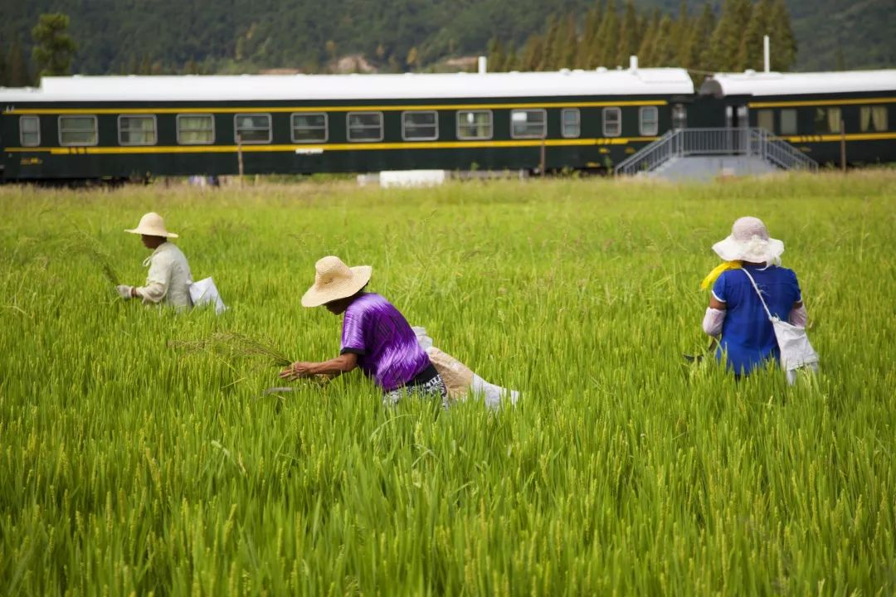
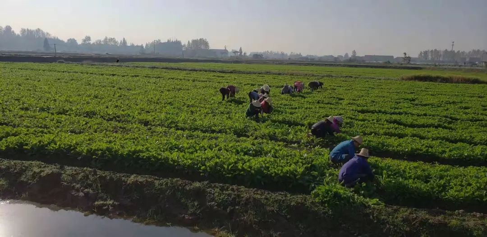
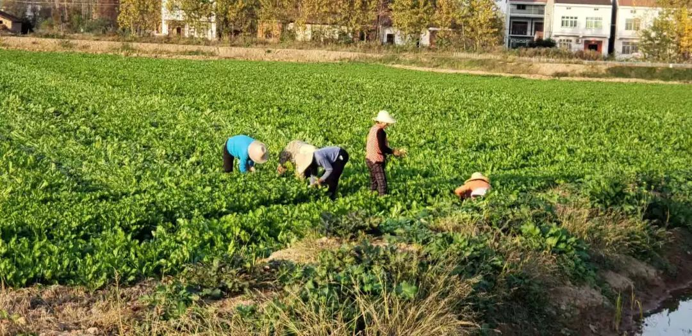
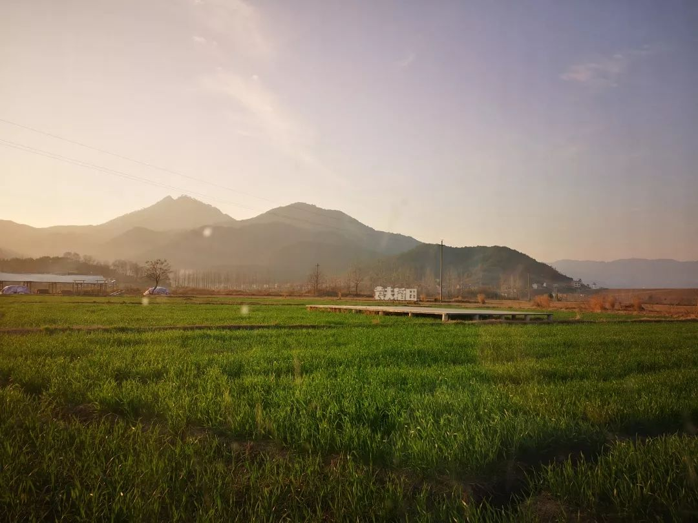
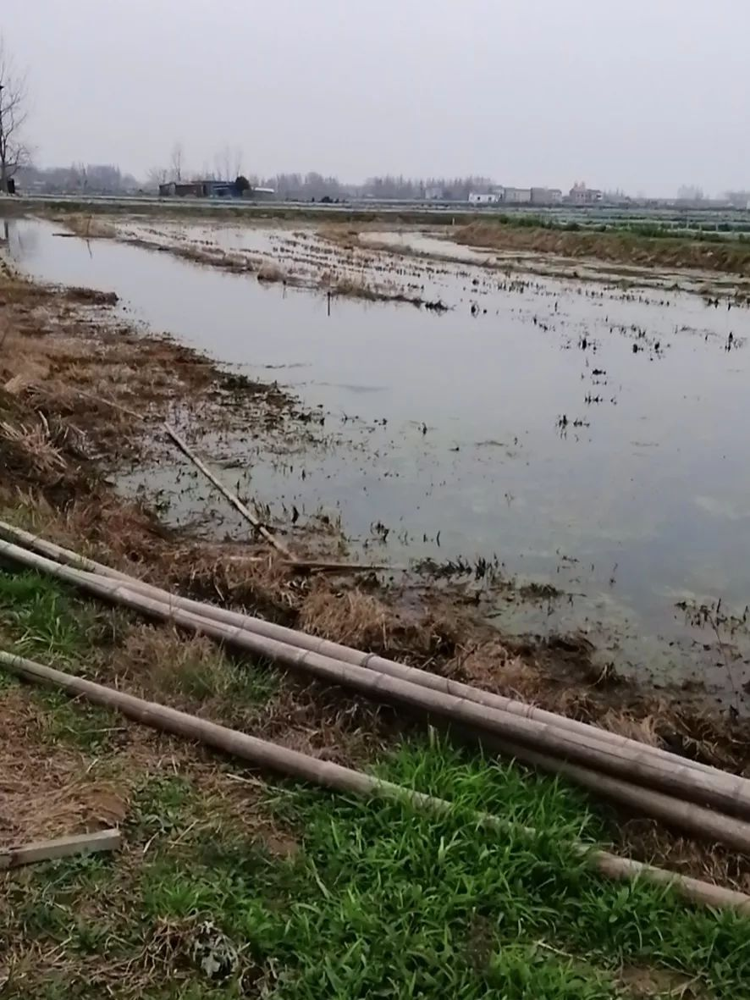

肺炎日记 | 1月28日：疫情十天或达高峰 武汉周边难题待解
原文链接 备份链接 【财新网】（实习记者 黄晏浩 记者 黄蕙昭 宿慧娴 单玉晓 覃建行 黄姝伦 实习记者 王颜玉）疫情持续爬坡。1月28日国家卫生健康委新闻发布会显示，过去一天新增1771名确诊病例，这相当于新冠发病以来此前已有总 …

有蔬菜农业生产基地和企业在接受南都周刊记者采访时表示，受新冠肺炎疫情影响，田里蔬菜无法及时收割与销售，焦心未来收入存在中断风险。
_
记者| 王晓珊 实习生 | 甘笠男
编辑 | 盛倩玉

黄冈市黄梅县大河镇袁夫稻田 水稻地
2月6日，湖北省正式出台17条财税支持政策，从落实相关税收政策、支持农副产品和医护物资供给、实施农贸市场经营户摊位租金补贴、推动无接触餐饮配送行业发展等4个方面入手，保障疫情防控物资供应，鼓励企业支持疫情防控，确保群众生活物资供应等。
2月8日，湖北省政府办公厅下发通知，从减轻企业负担、强化金融支持、加大财税支持、加大稳岗支持等四方面入手，出台18项措施。相关政策即日起施行，有效期暂定6个月对承租国有资产类经营用房的中小企业，3个月房租免收、6个月房租减半。对受疫情影响严重的小微企业，担保费率降至1%以下，再担保费减半。企业裁员（减员）率不高于5.5%的，返还上年度实际缴纳失业保险费的70%。
相关支持政策的颁布对小微企业而言或如甘露，对于生产不能中断农资企业而言，可暂解燃眉之急。
然而，春耕生产在即，但当前仍未出现防控疫情的拐点，有经营水稻种子销售及种植的企业表示，目前种子供应处于停顿状态，春耕生产与种子供应问题亟待解决。
与此同时，有蔬菜农业生产基地和企业在接受南都周刊记者采访时表示，受新冠肺炎疫情影响，田里蔬菜无法及时收割与销售，焦心未来收入存在中断风险。
农业复工仍待安排
农业生产对于农民而言是头等大事，湖北省黄冈市黄梅县农业局对此感到焦心不已。“现在各个村都已封村，乡镇之间严令禁止进出，水稻种植虽然还没到时间，但从目前来看都无法开展。”农业局工作人员在电话采访中提到，“当前除了保障人们基本生活所需要的蔬菜、畜禽的饲料，其他的生产暂无法保障。”

黄冈市黄梅县大河镇袁夫稻田 水稻地
湖北吉姥爷农业科技股份有限公司（以下简称“吉姥爷农业“），董事长刘元成这个春节过得也并不舒心，“榨菜估计今年要全部烂在地里。”

吉姥爷农业榨菜地
吉姥爷农业位于荆州监利县白螺镇，现有达1800亩的蔬菜生产基地，与当地500多家农户签订收购订单，还成立了大善人蔬菜种植专业合作社，统一为合作农户提供种子肥料及技术指导。
去年八月种上的榨菜，现在已经到了收割的时节。往年这个时候，田里的工人忙得歇不下脚，采摘、收购来的榨菜要赶紧送到工厂进行腌制、深加工，变成一罐罐的酱菜，销往全国各地。村里的蔬菜种植专业合作社加上工厂，前后有200多人参加劳动。

吉姥爷农业榨菜地
然而，如今面对自种蔬菜基地里的538亩绿油油的榨菜田，刘成元却无计可施，“摘不了，因为疫情，现在工人都不敢出门”，只能眼睁睁地看着叶子变老、发黄。
再迟十天半个月，蔬菜基地里榨菜就要全部报废，村里500多家农户可能面临蔬菜变质、无人收购的处境。
仓库里的酱菜存货已经所剩无几，没有新鲜榨菜、缺少工人，再加上高速封路，公司的生产、销售也不得不跟着停滞。他估计，如果疫情迟迟不解除，将给公司造成高达一百多万的亏损，约占往年利润20%。

吉姥爷农业榨菜地
去年腊月，吉姥爷农业已经提前购买了一千来斤辣椒种子，为夏季作物种植做准备。虽然疫情可能造成播种日期推迟，导致辣椒产量下降，但相比之下，即将烂在地里的榨菜才是刘元成最为忧心的。
面临相同困境的还有湖北咸宁嘉鱼县潘家湾镇。
潘家湾是全国重点蔬菜基地，以蔬菜产业作为农村经济的支柱产业，2018年全镇蔬菜面积已达10万亩。通常情况下，每年下半年种植的白菜、甘蓝、扁包菜可以从10月下旬，一直收获到来年4月。
嘉鱼周志蔬菜基地的负责人覃耀庭告诉记者，正常情况下，正月初五、初六就该开工了，但今年因为疫情的影响，复工遥遥无期。
另一方面，拉蔬菜的车子也较往年更不好找，“我们老百姓也没有办法，蔬菜我们拉不了，那还不是要在地里烂了，有啥办法呢？”覃耀庭说。
春耕备种需早日跟上
往年今日，仙桃市诺嘉绿色农业有限公司（以下简称“诺嘉农业”），已经开始对种子进行加工和包装，等待着年后将货物发往签订合同的农户手中，等到春耕时分，则可以开始进行播种。

诺嘉农业310亩示范园全景
该公司主要负责水稻全产业链的开发，然而，疫情发生后，诺嘉农业遭遇了春耕供种运输不畅的困境。
为了防止感染人数进一步扩散，湖北省实行严格的疫情隔离措施，实施全省封城堵路，非防疫物资、生活物资交通运输全部停止，种子无法运送到县、乡及农户手中。
2020年春节放假较往年提前，湖北大多数种子企业于春节假期前进行种子包装，诺嘉农业表示，当前企业加工数量仅占春耕生产供种量的20%～30%，春耕备种存在很大的缺口。
“我们企业提供育秧、插秧和农技服务，这些所有的准备基本上都要从二月中下旬开始着手，三月初就要开始进行育秧的一些工作。备种不足会影响一部分种业销售及农耕的事情。”诺嘉农业董事长李寒对记者说道。
遭遇春耕难题的还有袁夫稻田（湖北）农业发展有限公司（以下简称“袁夫稻田”）。

黄冈市黄梅县大河镇袁夫稻田 小麦地
“我们原来想做一些春天的水稻播种，但是现在因为封城封村，所有人都不许外出，我们现在也无法请到工人工作。”袁夫稻田创始人袁勇刚对记者说道，“除水稻外，我们还有一些蔬菜的耕种，现在同样是没法进行。”
袁勇刚表示，因为公司还有其他板块业务，运营成本不低，如果疫情到4月份仍未缓解，公司就无法再支撑下去，“3月初能够复工的话公司的损失大约在100万左右，若是持续到4月份，公司则会扩大亏损至300万。”

黄冈市黄梅县大河镇袁夫稻田 水稻地
疫情后虾稻行业或受影响
监利县位于湖北省中南部，江汉平原南端，境内河网、湖泊密布，素有“全国稻米第一县”之称， 后大力发展“稻虾连作”，小龙虾产量曾连续多年稳居湖北省第一，获得“中国小龙虾第一县”的美名。
但是，由于疫情持续，该县小龙虾投种、养殖受到不小的影响。

监利县杨水湖 龙虾养殖池
监利县杨水湖虾稻种养专业合作社负责人黄中华称，往年三、四月份小龙虾就上市了，年后这段时间正好处于小龙虾的成长期，然而，如今缺乏饲料，没有办法喂养小龙虾。
“去年，该县不少养殖户已将池塘里的龙虾售空，并没有保留虾种。现在人员流动受限，新虾苗无从购买，继而导致新一轮养殖活动无法开展。”黄中华告诉记者。
黄中华说，如果疫情影响持续到3月份以后，合作社300多的亩稻虾田每亩地将损失上千元，“我们农民本身就是以此生活，没法开工就没收入。”

监利县杨水湖 龙虾养殖池
湖北是我国虾稻种植的主要地区，据中国农业网介绍，2019年湖北稻渔综合种养总面积达到680万亩，居全国第一，18个县市稻渔综合种养面积超过10万亩。
2019年，湖北省虾稻种养面积大幅增加，使得湖北的小龙虾产量也有所增加。根据农业部发布的《小龙虾产业发展报告（2019）》，湖北2019年总产量为81.24万吨，排名全国第一，其产量约占全国总产量的一半（49.58%）。
解决资金压力成为迫切问题
当前不少受访企业表示，解决资金压力仍是当前最迫切的问题。
袁勇刚表示，在农业中很多东西都有免税，收税的板块税负也不会太高，主要压力源于银行贷款，若未来银行贷款能够根据实际情况进行递延，将能减缓部分企业压力。蔬菜基地有关负责人则希望早日解决农耕人手缺乏与销售问题，从而减少损失。
湖北是全国闻名的鱼米之乡，在古代就有“湖广熟、天下足”的说法。湖北省人民政府办公厅文件显示，湖北农业以种植业为主体，种植业又以粮食、棉花生产为主，被称为“粮棉大省“。根据国家统计局公布数据，2019年湖北粮食总产量为545亿斤左右。
湖北省两次发布财税支持政策后，不少企业和农民都期待能够迅速实现好转，减少中间流通环节，不误农时，帮助农业生产平稳、顺利过渡。
来源｜南都周刊
END
欢迎分享到朋友圈，如想取得授权请邮件：newmedia@nbweekly.com。如果想找到小南，可以在后台回复「小南」试试看哦~

文章已于修改
原文链接 备份链接 【财新网】（实习记者 黄晏浩 记者 黄蕙昭 宿慧娴 单玉晓 覃建行 黄姝伦 实习记者 王颜玉）疫情持续爬坡。1月28日国家卫生健康委新闻发布会显示，过去一天新增1771名确诊病例，这相当于新冠发病以来此前已有总 …
原文链接 备份链接 文 |《财经》数据研究员 徐进 编辑 | 谢丽容 元宵节过完了，再下来是“龙抬头”。 1、 今日概况 2月8日0—24时，31个省（自治区、直辖市）和新疆生产建设兵团报告，新增确诊病例2656例（湖北2147例），新增 …
原文链接 备份链接 ********** *****“说实在的，我那段时间最大的奢望什么都不是，是能找个地方让我停下来，睡那么一会儿，我就满足了！”***** 驾驶室里的肖红兵。视频截图 文 | 新京报记者 魏芙蓉 编辑｜ …
原文链接 备份链接 陈润/文 一 从2020年1月15日回武汉至今，我在武汉整整呆了24天。这是我自大学毕业以来在武汉呆得最久的一段时间，也是自去年家人搬回武汉陪伴最长的一段日子，更是我人生至今最困难悲伤的一段岁月。 一切都因新型冠状病毒 …
原文链接 备份链接 *************▲*************2020年1月29日，武警湖北总队黄冈支队官兵为担负隔离任务的黄冈市大别山区域医疗中心抢运物资。（新华社/图） 全文共*2888*字，阅读大约需要7分钟。 “我 …